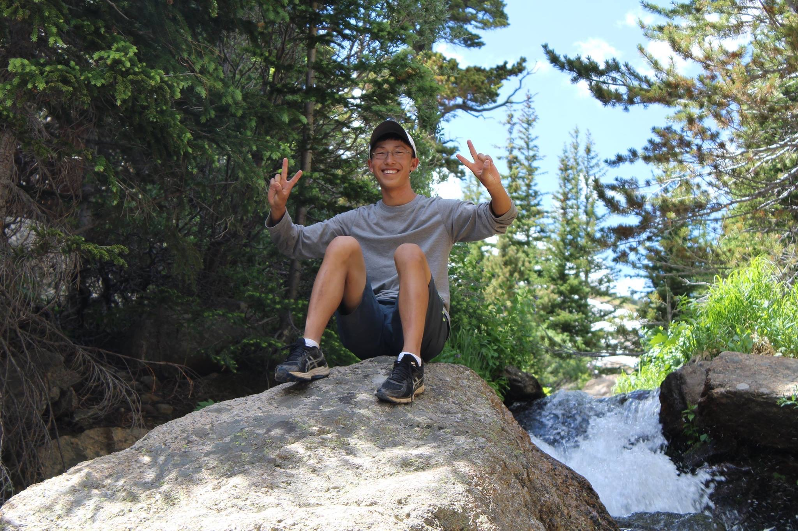

About Me
I grew up in a suburb of Denver known as Littleton, Colorado and for the last year, I have been studying Computer Science at the Georgia Institute of Technology.
This fall, I started my second year at Georgia Tech. I'm excited to learn new skills and continue to pursue my interests. Last year, I became a member of Georgia Tech's iOS Development Club and utilized what I learned to collaborate on a golf statistics application, which can be viewed under my projects page. I also particpated in our annual HackGT where I experienced first hand the infinite possibilities of Computer Science, and I hope to return this year to implement a cool idea.
I am an avid golfer, skier, and hiker. I've been golfing since I was 7 years old and I've skied for just as long. I played high school golf and I hope to join Georgia Tech's Club Golf Team in the future. I also love to spend time outdoors and explore new places.
I'm currently seeking an internship for the summer of 2018 where I can apply the skills I have learned so far in Computer Science. I also want to challenge myself to acquire new skills, and I'm excited to see where I end up over the course of the next year.